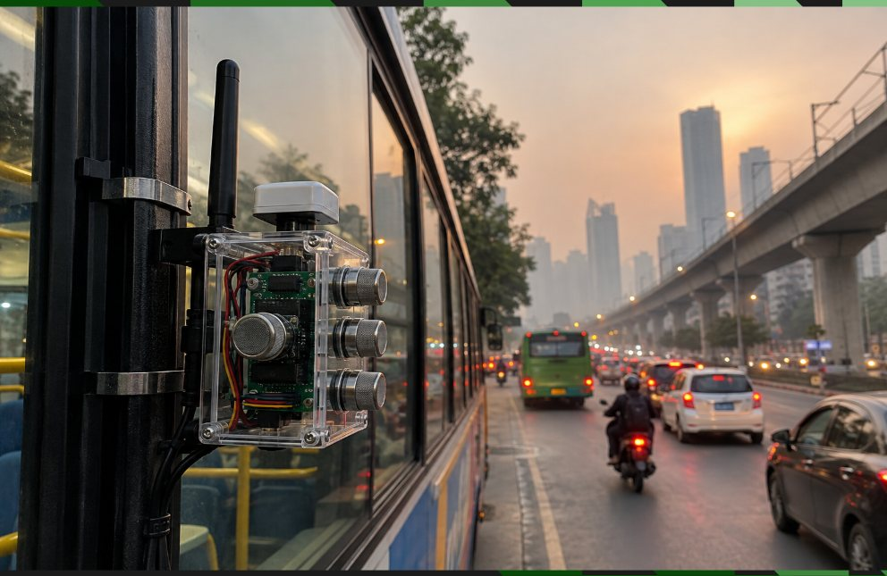
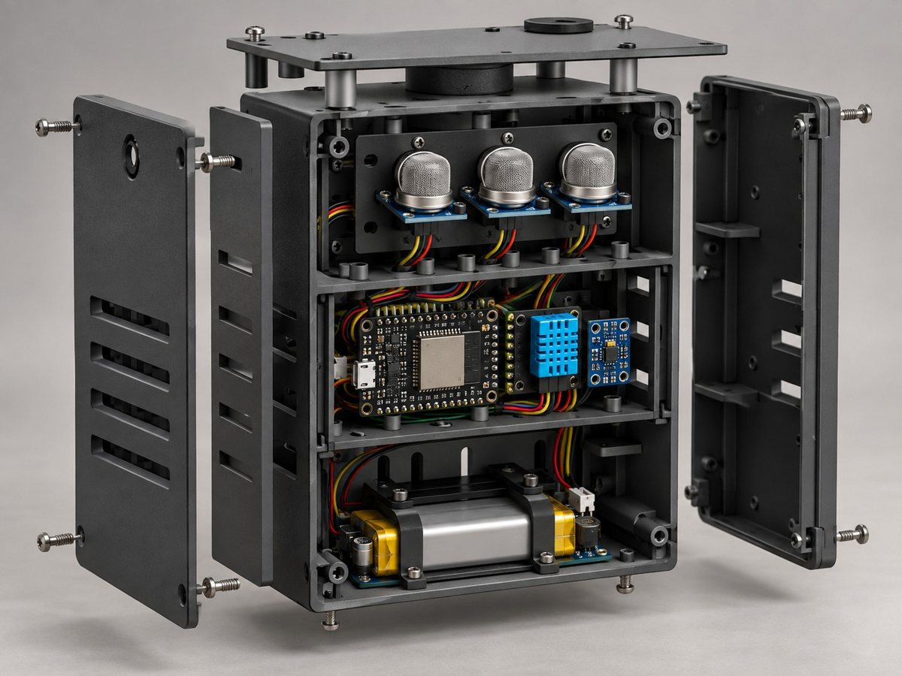

Hardware node
Raw ESP32 readings over USB: three gas proxies, temperature, humidity, pressure and altitude, with warm-up and fault flags.
Aeronex turns low-cost sensors on city corridors and buses into live zone AQI, a transparent guess at what is polluting, early anomaly alerts and short-term forecasts.
One compact, battery-powered unit bolts onto a city bus. As the bus drives its route, it measures the air along the whole road instead of at one fixed spot.


A full pipeline, not just a chart: validation, analytics, explainable attribution and alerts.
Raw ESP32 readings over USB: three gas proxies, temperature, humidity, pressure and altitude, with warm-up and fault flags.
CPCB-band AQI from PM2.5/PM10, smoothed per zone, with the raw readings always one click away.
Leaflet map with zone AQI pins and your hardware node. Falls back to an offline schematic when there is no internet.
15, 30 and 60 minute outlook, persistence versus trend, each labelled with the method that produced it.
Is it traffic, dust or smoke? A transparent rule-based hypothesis with a confidence score — and it abstains when unsure.
Deviations from each zone's own baseline become events that move through detected, confirmed and recommended action.
Online status, GPS validity, warm-up and sensor faults for every fixed and bus-mounted node.
PM2.5/PM10 and gas-proxy sensors on corridor poles and city buses.
A gateway forwards packets to the API, which validates, de-duplicates and stores them. Nothing is lost if the link drops.
The worker computes AQI, baselines, source hypotheses, anomalies and forecasts.
Dashboards for the public and officials, with recommended actions for open events.
A fixed node measures one spot. A node on a city bus measures every ~100 m of road it drives, so three routes into JNTU cover far more ground than a handful of fixed pins.
Loading routes...
Readings stream from your board in the browser. They stay on screen after a reload or unplug, clearly marked as stored.
This browser can't open serial ports. Open the site in Chrome or Edge on a desktop. If it still fails, run python -m http.server in this folder and open http://localhost:8000. Stored readings still show below.
Each card is a Hyderabad pollution corridor with its current indicative AQI. Updates every few seconds while sensors are streaming.
Click any spot on the map, or search a PIN code or district. You get the area name, PIN, district, AQI and weather for that place.
Click the map or search above.
Estimated AQI between sampled points, smoothly interpolated across the Hyderabad area. Cells fade where the estimate is further from a real sample.
Loading heatmap data...
Hourly AQI for the past two days and the next two, for any zone or the place you picked on the map.
This is a model forecast (CAMS via Open-Meteo), not a prediction from your sensors. Your own gas-sensor outlook is in the Hardware view.